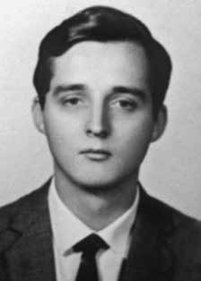

Norberto
Nehring
BIOGRAFIA
Norberto Nehring, economista e professor da Universidade de São Paulo (USP), foi militante do Partido Comunista Brasileiro (PCB) e, posteriormente, da Ação Libertadora Nacional (ALN), quando foi preso, torturado e morto. Casado com Maria Lygia Quartim de Moraes, teve uma filha, Marta Nehring, em 1964.
Deixou o PCB em 1968 para aderir à ALN com Carlos Marighella. No ano seguinte, foi preso durante dez dias, ocasião em que testemunhou a tortura de companheiros da ALN. Foi cercado em sua própria casa e levado a interrogatório por Romeu Tuma, então delegado do Departamento de Ordem Política e Social (Dops). Posto em liberdade, começou a atuar na clandestinidade, pois suspeitava que voltaria a ser perseguido.
Algum tempo após sua prisão, foi para Cuba receber treinamento para guerrilha. Em sua volta ao Brasil, um ano depois, foi interceptado por agentes da ditadura. Preso pelo delegado Sérgio Fleury, foi torturado até morrer. Segundo a versão oficial, elaborada à época pelo delegado Ary Casagrande e assinada por Romeu Tuma, Norberto Nehring teria se suicidado. Ele estaria em um hotel no centro de São Paulo (SP) quando se enforcou. No entanto, não houve perícia do local, laudo necroscópico nem fotos do corpo. Um familiar seu foi ao hotel apurar as circunstâncias da morte e foi informado de que ninguém jamais havia se suicidado lá.
Para justificar a própria versão, agentes do governo se valeram de uma carta deixada pelo ex-militante da ALN poucos dias antes de morrer. O documento, porém, era endereçado à esposa e à filha e narra a aflição dos últimos momentos de Nehring, ciente de que seria preso.
Em junho de 2013, entrou em uma lista da Secretaria de Direitos Humanos da Presidência da República que continha 44 nomes de militantes cujas mortes durante a ditadura deixariam de ser classificadas como suicídio. Em setembro do mesmo ano, sua família requisitou à Comissão da Verdade do Estado de São Paulo que uma nova certidão de óbito fosse emitida, detalhando os abusos sofridos na prisão e dando como motivo da morte “causas não naturais em dependências policiais ou assemelhadas”.
Norberto Nehring, economist and professor at the University of São Paulo (USP), was a member of the Brazilian Communist Party (PCB) and, later, of Ação Libertadora Nacional (ALN), when he was arrested, tortured and killed. Married to Maria Lygia Quartim de Moraes, he had a daughter, Marta Nehring, in 1964.
He left the PCB in 1968 to join the ALN with Carlos Marighella. The following year, he was arrested for ten days, during which he witnessed the torture of ALN comrades. He was surrounded in his own home and taken to interrogation by Romeu Tuma, then delegate of the Department of Political and Social Order (Dops). Released, he began to work in hiding, as he suspected he would be persecuted again.
Some time after his arrest, he went to Cuba to receive guerrilla training. On his return to Brazil, a year later, he was intercepted by agents of the dictatorship. Arrested by police chief Sérgio Fleury, he was tortured until he died. According to the official version, prepared at the time by delegate Ary Casagrande and signed by Romeu Tuma, Norberto Nehring committed suicide. He was in a hotel in the center of São Paulo (SP) when he hanged himself. However, there was no forensic examination of the scene, no autopsy report or photos of the body. A family member went to the hotel to investigate the circumstances of the death and was informed that no one had ever committed suicide there.
To justify their own version, government agents used a letter left by the former ALN activist a few days before he died. The document, however, was addressed to his wife and daughter and narrates the distress of Nehring's last moments, aware that he would be arrested.
In June 2013, it was included on a list from the Human Rights Secretariat of the Presidency of the Republic that contained 44 names of activists whose deaths during the dictatorship would no longer be classified as suicide. In September of the same year, his family requested the Truth Commission of the State of São Paulo that a new death certificate be issued, detailing the abuse suffered in prison and giving the reason for death as “unnatural causes in police facilities or similar”.
Norberto Nehring, economista y profesor de la Universidad de São Paulo (USP), era militante del Partido Comunista Brasileño (PCB) y, más tarde, de la Acción Libertadora Nacional (ALN), cuando fue detenido, torturado y asesinado. Casado con Maria Lygia Quartim de Moraes, tuvo una hija, Marta Nehring, en 1964.
Dejó el PCB en 1968 para incorporarse a la ALN con Carlos Marighella. Al año siguiente, fue detenido durante diez días, durante los cuales presenció la tortura de compañeros de la ALN. Fue rodeado en su propia casa y llevado para interrogarlo por Romeu Tuma, entonces delegado del Departamento de Orden Político y Social (Dops). Liberado, comenzó a trabajar en la clandestinidad, pues sospechaba que volvería a ser perseguido.
Algún tiempo después de su arresto, viajó a Cuba para recibir entrenamiento guerrillero. A su regreso a Brasil, un año después, fue interceptado por agentes de la dictadura. Detenido por el jefe de policía Sérgio Fleury, fue torturado hasta la muerte. Según la versión oficial, elaborada en su momento por el delegado Ary Casagrande y firmada por Romeu Tuma, Norberto Nehring se suicidó. Se encontraba en un hotel del centro de São Paulo (SP) cuando se ahorcó. Sin embargo, no hubo ningún examen forense de la escena, ni informe de autopsia ni fotografías del cuerpo. Un familiar acudió al hotel para investigar las circunstancias de la muerte y le informaron que allí nunca nadie se había suicidado.
Para justificar su propia versión, agentes del gobierno utilizaron una carta dejada por el ex activista de la ALN unos días antes de morir. El documento, sin embargo, estaba dirigido a su esposa y a su hija y narra la angustia de los últimos momentos de Nehring, consciente de que sería arrestado.
En junio de 2013, fue incluido en una lista de la Secretaría de Derechos Humanos de la Presidencia de la República que contenía 44 nombres de activistas cuyas muertes durante la dictadura ya no serían catalogadas como suicidio. En septiembre del mismo año, su familia solicitó a la Comisión de la Verdad del Estado de São Paulo que se emitiera un nuevo certificado de defunción, detallando los abusos sufridos en prisión y dando el motivo de la muerte como “causas no naturales en instalaciones policiales o similares”.
CIRCUNSTÂNCIAS DA MORTE
Norberto Nehring morreu 24 de abril de 1970. De acordo com o relatório do 3º Distrito Policial de Campos Elíseos, datado de 21 de agosto de 1970, assinado pelo delegado Ary Casagrande, a polícia local recebeu o comunicado de um suicídio por enforcamento em um quarto do Hotel Pirajá, no centro de São Paulo, na data de 25 de abril de 1970. No entanto, o relatório da CEMDP registra a morte de Norberto em 24 de abril de 1970, quando outros militantes da ALN teriam visto o corpo de Norberto sair do DOPS.
Passados mais de 40 anos, as investigações sobre esse episódio revelaram a existência de inúmeros elementos de convicção que permitem apontar que a versão divulgada à época não se sustenta. Apesar do registro de suicídio, não foi realizada à época nenhuma perícia de local que permitisse a comprovação dessa tese. Não foi localizado laudo necroscópico, nem fotos do local ou do corpo de Norberto.
Ademais, o Hotel Pirajá, local do suposto suicídio, funcionava à época como um bordel, frequentado por policiais, nas proximidades da antiga estação rodoviária e do Departamento de Ordem Política e Social (DOPS/SP). Um ano antes de sua morte, Norberto foi preso no DOPS/SP. Em janeiro de 1969, permaneceu na delegacia por dez dias, testemunhando o uso da tortura contra presos políticos. Um mandado de busca e apreensão foi apresentado em nome de sua mulher Maria Lygia, pelo delegado Newton Fernandes, que apreendeu uma quantidade significativa de livros e documentos pessoais na residência do casal. Posto em liberdade, Norberto passou a atuar na clandestinidade e, em abril de 1969, viajou para Cuba, para receber treinamento de guerrilha.
De acordo com documentos produzidos pelos órgãos de segurança e repressão da ditadura, Norberto integrava o chamado 2º Exército da Ação Libertadora Nacional (ALN), um pequeno grupo de militantes que havia recebido treinamento em Cuba, no período entre março e setembro de 1969. De acordo com informação contida no processo apresentado à Comissão Especial sobre Mortos e Desaparecidos Políticos (CEMDP), Norberto teria retornado ao Brasil no dia 18 de abril de 1970.
Nessa mesma data teria sido preso por agente de segurança no aeroporto do Galeão. Entre os dias 24 e 25 de abril, Norberto apareceria morto em um quarto do Hotel Pirajá. Apesar dos esforços de pesquisa, não foi possível estabelecer a trama que culminou na morte desse militante. Um conjunto de depoimentos prestados na Auditoria Militar e de declarações registradas em cartório lançou luz sobre a morte de Norberto.
Diógenes de Arruda Câmara e Paulo de Tarso Venceslau afirmaram que souberam da morte de Norberto Nehring ainda quando estiveram detidos no DOPS/SP. Diógenes afirma categoricamente que Norberto foi assassinado sob tortura e Paulo de Tarso relata que carcereiros e policiais frequentemente aludiam ao fato de que Nehring teria sido morto depois de desembarcar no Brasil vindo da Tchecoslováquia. O destino dado aos restos mortais de Norberto demonstra a atuação irregular dos agentes do Estado e ratificam a falsificação das circunstâncias da morte, uma vez que foi sepultado com o codinome que utilizava – Ernest Snell Burmann – apesar da versão de suposto suicídio.
A versão foi confirmada em nota oficial do então delegado do DOPS, Romeu Tuma, que trouxe um “bilhete de suicídio” de Norberto. O relator do caso na CEMDP, Paulo Gustavo Gonet Branco, quando da apreciação do Processo nº 176/96, em 23 de abril de 1996, ressaltou que os indícios até então apresentados seriam suficientes para o deferimento do pleito, que foi aprovado por unanimidade. Por sua vez, os familiares de Norberto – Marta, Sofia, Cléo e Maria Lygia – em depoimento prestado à Comissão Estadual da Verdade de São Paulo, na data de 27 de setembro de 2013, fizeram questão de enfatizar o desejo de uma segunda retificação da certidão de óbito de Norberto Nehring, na qual constasse não apenas da declaração da morte por “causas não naturais”, mas o reconhecimento inequívoco da responsabilidade do Estado na execução de Norberto e o registro do local, da data e a tortura como causa real do falecimento.
Os restos mortais de Norberto foram sepultados no cemitério da Vila Formosa, em São Paulo, com nome falso e somente depois de três meses a família foi avisada. Após exumação, que confirmava a identidade de Norberto, seus restos mortais foram transferidos para o jazigo da família.
Norberto Nehring died on April 24, 1970. According to the report from the 3rd Police District of Campos Elíseos, dated August 21, 1970, signed by delegate Ary Casagrande, the local police received a report of a suicide by hanging in a room at the Hotel Pirajá, in the center of São Paulo, on April 25, 1970. However, the CEMDP report records the Norberto's death on April 24, 1970, when other ALN militants would have seen Norberto's body leave the DOPS.
More than 40 years later, investigations into this episode revealed the existence of numerous elements of conviction that allow us to point out that the version published at the time is not sustainable. Despite the suicide record, no site investigation was carried out at the time that would allow this thesis to be proven. No autopsy report was found, nor photos of the scene or Norberto's body.
Furthermore, the Pirajá Hotel, the location of the alleged suicide, operated at the time as a brothel, frequented by police officers, close to the old bus station and the Department of Political and Social Order (DOPS/SP). A year before his death, Norberto was arrested at DOPS/SP. In January 1969, he remained at the police station for ten days, witnessing the use of torture against political prisoners. A search and seizure warrant was presented in the name of his wife Maria Lygia, by delegate Newton Fernandes, who seized a significant amount of books and personal documents from the couple's residence. Released, Norberto began to work underground and, in April 1969, traveled to Cuba to receive guerrilla training.
According to documents produced by the dictatorship's security and repression bodies, Norberto was part of the so-called 2nd Army of National Liberation Action (ALN), a small group of militants who had received training in Cuba between March and September 1969. According to information contained in the process presented to the Special Commission on Political Deaths and Disappearances (CEMDP), Norberto returned to Brazil on April 18, 1970.
On the same date, he was arrested by a security agent at Galeão airport. Between April 24th and 25th, Norberto would appear dead in a room at the Hotel Pirajá. Despite research efforts, it was not possible to establish the plot that culminated in the death of this militant. A set of testimonies given at the Military Audit and statements recorded in a notary's office shed light on Norberto's death.
Diógenes de Arruda Câmara and Paulo de Tarso Venceslau stated that they learned of Norberto Nehring's death while they were detained at DOPS/SP. Diógenes categorically states that Norberto was murdered under torture and Paulo de Tarso reports that prison guards and police officers frequently alluded to the fact that Nehring had been killed after landing in Brazil from Czechoslovakia. The fate given to Norberto's remains demonstrates the irregular actions of State agents and confirms the falsification of the circumstances of his death, since he was buried with the code name he used – Ernest Snell Burmann – despite the version of alleged suicide.
The version was confirmed in an official note from the then DOPS delegate, Romeu Tuma, who brought a “suicide note” from Norberto. The rapporteur of the case at CEMDP, Paulo Gustavo Gonet Branco, when considering Process No. 176/96, on April 23, 1996, highlighted that the evidence presented so far would be sufficient to grant the claim, which was approved unanimously. In turn, Norberto's family members - Marta, Sofia, Cléo and Maria Lygia - in a statement given to the State Truth Commission of São Paulo, on September 27, 2013, made a point of emphasizing their desire for a second rectification of Norberto Nehring's death certificate, which included not only the declaration of death due to "unnatural causes", but the unequivocal recognition of the State's responsibility in Norberto's execution and the registration of the place, date and torture as the real cause of death.
Norberto's remains were buried in the Vila Formosa cemetery, in São Paulo, under a false name and only after three months was the family notified. After exhumation, which confirmed Norberto's identity, his remains were transferred to the family tomb.
Norberto Nehring murió el 24 de abril de 1970. Según el informe del 3.º Distrito Policial de Campos Elíseos, de 21 de agosto de 1970, firmado por el delegado Ary Casagrande, la policía local recibió una denuncia de suicidio por ahorcamiento en una habitación del Hotel Pirajá, en el centro de São Paulo, el 25 de abril de 1970. Sin embargo, el informe del CEMDP registra la muerte de Norberto en abril. 24 de 1970, cuando otros militantes de la ALN habrían visto el cuerpo de Norberto salir del DOPS.
Más de 40 años después, las investigaciones sobre este episodio revelaron la existencia de numerosos elementos de convicción que permiten señalar que la versión publicada en su momento no es sostenible. A pesar del historial de suicidio, en ese momento no se llevó a cabo ninguna investigación del lugar que permitiera probar esta tesis. No se encontró ningún informe de autopsia, ni fotografías del lugar ni del cuerpo de Norberto.
Además, el Hotel Pirajá, lugar del presunto suicidio, funcionaba en ese momento como un burdel, frecuentado por agentes de policía, cerca de la antigua estación de autobuses y del Departamento de Orden Político y Social (DOPS/SP). Un año antes de su muerte, Norberto fue detenido en el DOPS/SP. En enero de 1969 permaneció en la comisaría durante diez días, presenciando el uso de torturas contra los presos políticos. Una orden de registro e incautación fue presentada a nombre de su esposa María Lygia, por el delegado Newton Fernandes, quien incautó una importante cantidad de libros y documentos personales de la residencia del matrimonio. Liberado, Norberto comenzó a trabajar en la clandestinidad y, en abril de 1969, viajó a Cuba para recibir entrenamiento guerrillero.
Según documentos elaborados por los órganos de seguridad y represión de la dictadura, Norberto formaba parte del llamado II Ejército de Acción de Liberación Nacional (ALN), un pequeño grupo de militantes que habían recibido entrenamiento en Cuba entre marzo y septiembre de 1969. Según información contenida en el proceso presentado ante la Comisión Especial sobre Muertes y Desapariciones Políticas (CEMDP), Norberto regresó a Brasil el 18 de abril de 1970.
Ese mismo día fue detenido por un agente de seguridad en el aeropuerto de Galeão. Entre el 24 y 25 de abril, Norberto aparecería muerto en una habitación del Hotel Pirajá. Pese a los esfuerzos de investigación, no fue posible establecer el complot que culminó con la muerte de este militante. Un conjunto de testimonios rendidos en la Auditoría Militar y declaraciones registradas en una notaría arrojan luz sobre la muerte de Norberto.
Diógenes de Arruda Câmara y Paulo de Tarso Venceslau declararon que tuvieron conocimiento de la muerte de Norberto Nehring mientras estaban detenidos en el DOPS/SP. Diógenes afirma categóricamente que Norberto fue asesinado bajo tortura y Paulo de Tarso informa que guardias penitenciarios y policías aludieron con frecuencia al hecho de que Nehring había sido asesinado después de desembarcar en Brasil procedente de Checoslovaquia. El destino corrido por los restos de Norberto demuestra el accionar irregular de agentes estatales y confirma la falsedad de las circunstancias de su muerte, ya que fue enterrado con el nombre clave que utilizó -Ernest Snell Burmann- pese a la versión de presunto suicidio.
La versión fue confirmada en una nota oficial del entonces delegado del DOPS, Romeu Tuma, quien trajo una “nota de suicidio” de Norberto. El relator del caso en el CEMDP, Paulo Gustavo Gonet Branco, al considerar el Proceso No. 176/96, el 23 de abril de 1996, destacó que las pruebas presentadas hasta el momento serían suficientes para hacer lugar a la demanda, la cual fue aprobada por unanimidad. Por su parte, los familiares de Norberto - Marta, Sofía, Cléo y María Lygia - en una declaración dada ante la Comisión Estatal de la Verdad de São Paulo, el 27 de septiembre de 2013, insistieron en subrayar su deseo de una segunda rectificación del certificado de defunción de Norberto Nehring, que incluía no sólo la declaración de muerte por "causas no naturales", sino el reconocimiento inequívoco de la responsabilidad del Estado en la ejecución de Norberto y el registro de la muerte. lugar, fecha y tortura como causa real de la muerte.
Los restos de Norberto fueron enterrados en el cementerio de Vila Formosa, en São Paulo, con un nombre falso y sólo después de tres meses fue notificado a la familia. Luego de la exhumación, que confirmó la identidad de Norberto, sus restos fueron trasladados a la tumba familiar.